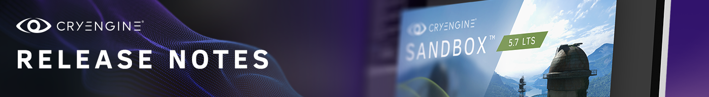
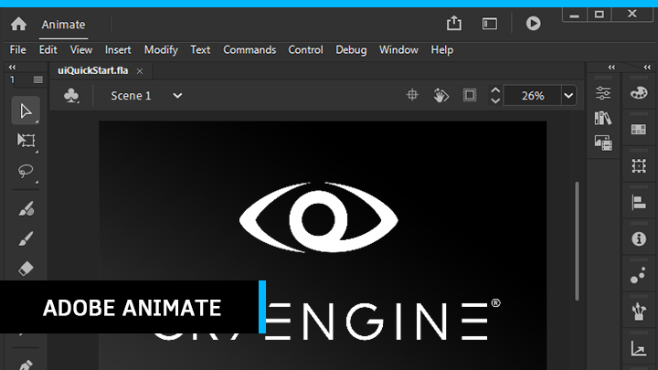
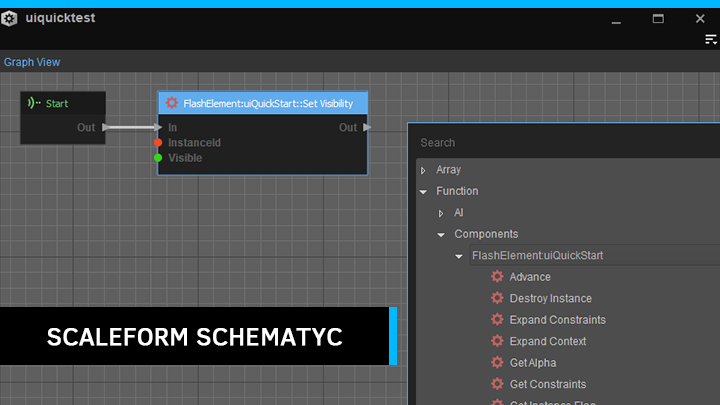
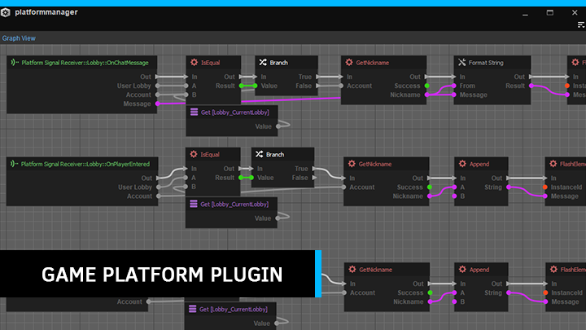
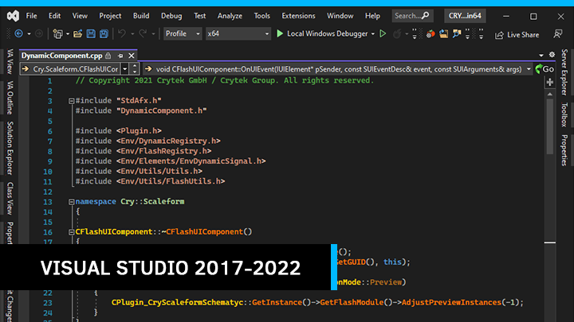

 This CRYENGINE 5.7 Long Term Support (LTS) release is aimed at improving the workflows of the Engine with the latest development software. Besides fixing several bugs reported both internally and by the community, it also features updates such as the GamePlatform Plugin (with Flow Graph and Schematyc nodes added for your convenience), as well Scaleform 4 support. An improvement over Scaleform 3, the Scaleform 4 integration features customized rendering for higher performance on all platforms. It is backwards compatible with ActionScript 2.0, providing you with the performance benefits of Scaleform 4 without having to remake your Flash projects in ActionScript 3.0, while also supporting ActionScript 3.0 which in turn allows the use of Adobe Animate. Scaleform 3 however is still available, in case the upgrade to Scaleform 4 causes unforeseen bugs to block your projects.  The Scaleform Schematyc plugin has been provided to emulate the necessary functions that are provided by Flow Graph for the UI system. UI elements are available as Components, while functions and events corresponding to these elements can be defined in an Element XML file. It supports both Scaleform 3 and 4.  The GamePlatform plugin is an update to the plugin that was shipped with CRYENGINE 5.6. Expanded features include support for various platforms such as Steam, PlayStation and Xbox. Additionally, it includes an optional new plugin which provides visual scripting nodes for Flow Graph and Schematyc. The deprecated Discord Rich Presence SDK has also been updated to the Discord Game SDK. New documentation for the GamePlatform Plugin can be found here.  Engine code and CMake has been updated to support Visual Studio versions 2017, 2019 and 2022, while Visual Studio 2015 support has been deprecated. Along with this upgrade, support for the C++17 standard implementation has been added while Windows SDK has been updated to 10.0.20348.0.  Fixed: Fixed 5.7 Overview
Highlights
Scaleform 4
Scaleform Schematyc
GamePlatform Plugin
Visual Studio 2017 - 2022 Support
Release Notes
Animation
Animation General
AI
AI System
UQS
Core/System
Engine General
ExternalInterface callback mechanism to Flash UI system.cbuffer unification, vertex format unification, reduced cbuffer writes.System
CMake
Action General
Flowgraph
Schematyc
FromString methods for these types.CAnyArray that caused memory trampling when re-allocation occurred due to adding elements. Added element type safe-guards for remove and push back methods.AnyArray methods assuming the data were pointers rather than in-place types.ListenerSet iteration guards.nullptr access of AnyArrays.Templates
Graphics and Rendering
Renderer General
3D Engine
SetLevelPath clamping limit that was longer than the actual array size.DirectX 12
rvalue used as lvalue.Virtual Reality
Plugins
Physics
Physics
Network
Network
Sandbox
Editor General
-export in the command line.Tools
Resource Compiler
PakEncrypt
Plugins and Projects
CRYENGINE Plugins
Game General
GamePlatform
Mobile & Consoles
General
XBox
Playstation